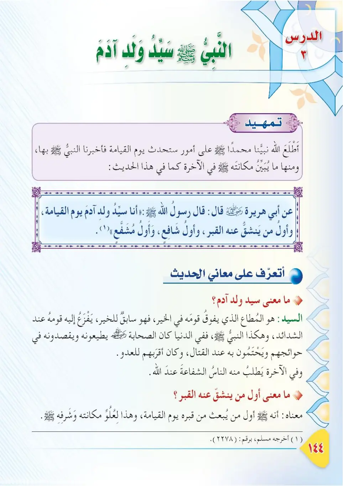
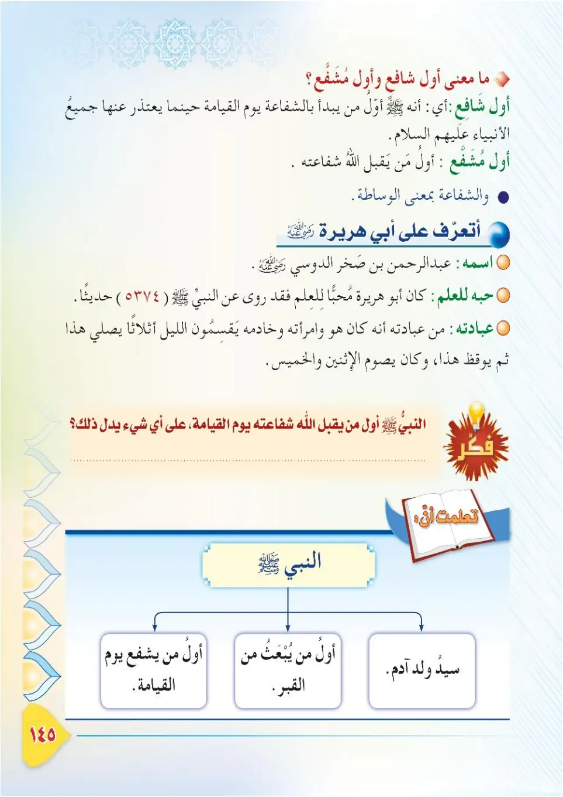
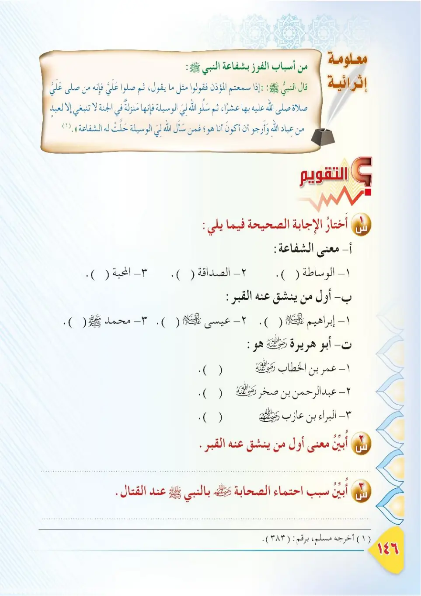
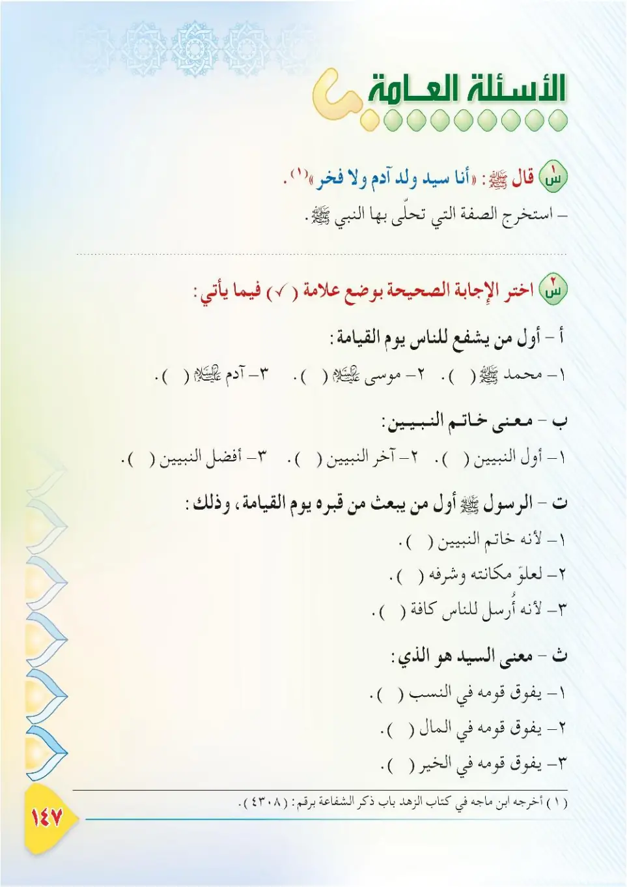
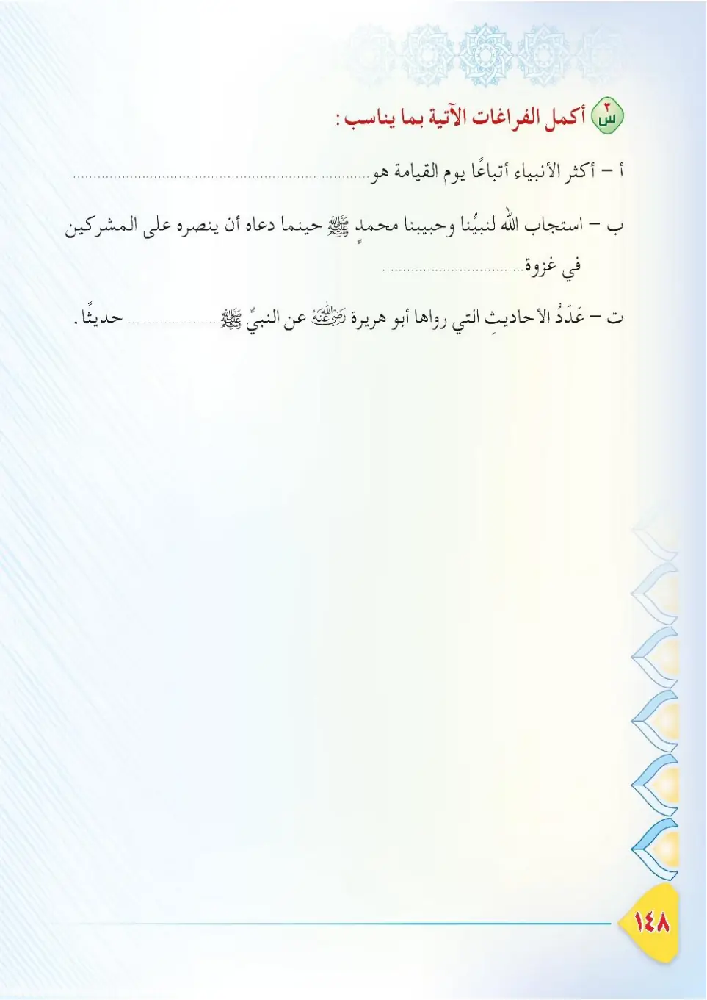
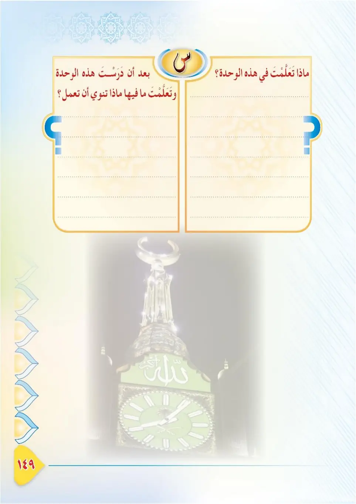
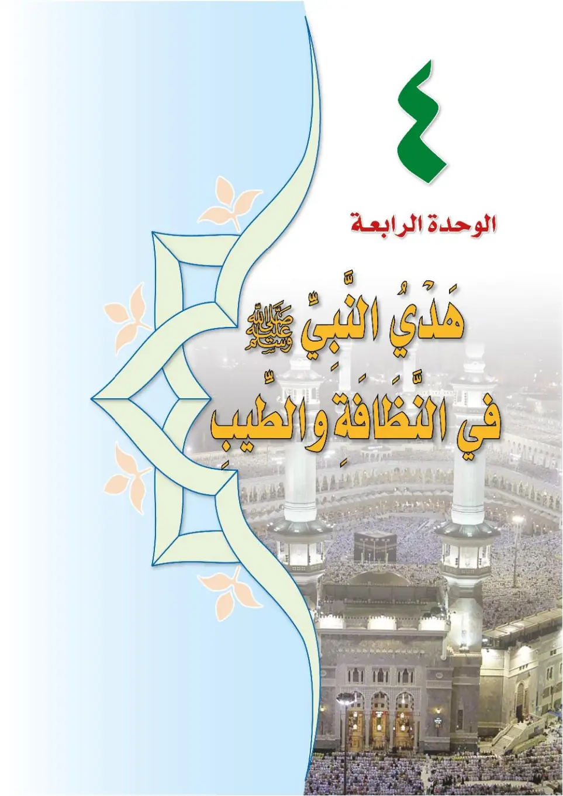
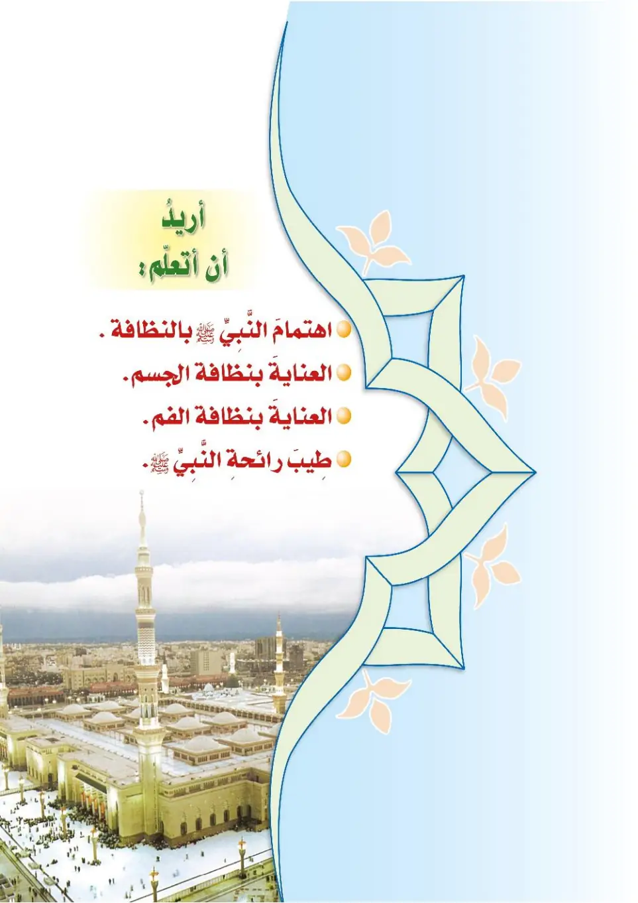

Stage 3·المرحلة الثالثة📖 Unit 3
سَيِّدُ وَلَدِ آدَمَ The Leader of the Children of Adam
From the Textbookpp. 145–152








قال النبيُّ ﷺ: «أنا سيّدُ ولدِ آدمَ». فما معنى السيدِ؟ وما معنى حديثِه ﷺ؟ نَتَعرَّفُ على ذلك في هذا الدرسِ.
Qala an-nabiyyu ﷺ: «Ana sayyidu waladi Adama». Fama ma'na as-sayyid? Wa ma ma'na hadithihi ﷺ? Nata'arrafu 'ala dhalika fi hadha ad-dars.
The Prophet ﷺ said: "I am the leader of the children of Adam." What is the meaning of "sayyid" (leader)? And what does this hadith mean? We will learn about that in this lesson.
நபி ﷺ கூறினார்கள்: "நான் ஆதம் சந்ததியரின் தலைவன்." 'சய்யித்' (தலைவன்) என்பதன் பொருள் என்ன? இந்த ஹதீஸின் பொருள் என்ன? இந்தப் பாடத்தில் அறிவோம்.
عن أبي هريرةَ رضي الله عنه قال: قال رسولُ اللهِ ﷺ: «أَنَا سَيِّدُ وَلَدِ آدَمَ يَوْمَ القيامةِ، وأوَّلُ مَن يَنشَقُّ عنه القبرُ، وأوَّلُ شافعٍ وأوَّلُ مُشفَّعٍ». أخرجه مسلم.
'An Abi Hurayrata radiyallahu 'anhu qal: qala rasulullahi ﷺ: «Ana sayyidu waladi Adama yawma al-qiyamah, wa awwalu man yanshaqqu 'anhu al-qabru, wa awwalu shafi'in wa awwalu mushaffa'». Akhrajahu Muslim.
Abu Hurairah, may Allah be pleased with him, reported: The Messenger of Allah ﷺ said: "I am the leader of the children of Adam on the Day of Resurrection, the first one for whom the grave will be opened, the first intercessor, and the first whose intercession will be accepted." Narrated by Muslim.
அபூஹுரைரா (ரலி) அறிவிக்கிறார்: அல்லாஹ்வின் தூதர் ﷺ கூறினார்கள்: "மறுமை நாளில் ஆதம் சந்ததியரின் தலைவன் நானே. கப்ர் திறக்கப்படும் முதல் நபர் நானே. முதலாவது ஷபாஅத் செய்பவரும், ஷபாஅத் ஏற்கப்படும் முதல் நபரும் நானே." (முஸ்லிம்)
معاني الحديثِ: - السَّيِّدُ: هو الذي يُقدَّمُ على غيرِه، ويُكرَّمُ ويُوقَّرُ. - «يَنشَقُّ عنه القبرُ»: أي يُفتَحُ قبرُه الكريمُ عندَ البعثِ قبلَ الناسِ. - «أوَّلُ شافعٍ وأوَّلُ مُشفَّعٍ»: أي أوَّلُ مَن يشفعُ وأوَّلُ مَن تُقبَلُ شفاعتُه يومَ القيامةِ.
Ma'ani al-hadith: - as-sayyid: huwa alladhi yuqaddamu 'ala ghayrih, wa yukramu wa yuwaqqar. - «yanshaqqu 'anhu al-qabru»: ayy yufathu qabruh al-karimu 'inda al-ba'thi qabla an-nas. - «awwalu shafi'in wa awwalu mushaffa'»: ayy awwalu man yashfa'u wa awwalu man tuqbalu shafa'atuhu yawma al-qiyamah.
Meanings of the hadith:<br>- As-Sayyid (the leader): the one who is given precedence over others and is honoured and respected.<br>- "The first for whom the grave will be opened": the noble grave will be opened for him upon resurrection before people.<br>- "The first intercessor whose intercession is accepted": the first to intercede and the first whose intercession is accepted on the Day of Resurrection.
ஹதீஸின் பொருள்கள்:<br>- 'அஸ்ஸய்யித்' (தலைவர்): மற்றவர்களுக்கு முன்னதாக வைக்கப்படுபவர்; மதிக்கப்பட்டு கௌரவிக்கப்படுபவர்.<br>- "கப்ர் திறக்கப்படும் முதல் நபர்": எழுப்பப்படும் போது மக்களுக்கு முன் அவரின் கப்ர் திறக்கப்படும்.<br>- "முதலாவது ஷபாஅத் செய்பவர்": மறுமையில் முதன்முதலாக பரிந்து பேசுபவரும், அவரின் பரிந்துரை ஏற்கப்படும் முதல் நபரும்.
وقال النبيُّ ﷺ: «أَنَا سَيِّدُ وَلَدِ آدَمَ يَوْمَ القيامةِ، ولا فخرَ، وبِيَدِي لِوَاءُ الحمدِ، ولا فخرَ». أخرجه الترمذي.
Wa qala an-nabiyyu ﷺ: «Ana sayyidu waladi Adama yawma al-qiyamah, wa la fakhra, wa biyadi liwa'u al-hamdi wa la fakhra». Akhrajahu at-Tirmidhi.
The Prophet ﷺ also said: "I am the leader of the children of Adam on the Day of Resurrection — and that is no boast. The banner of praise is in my hand — and that is no boast." Narrated by At-Tirmidhi.
நபி ﷺ கூறினார்கள்: "மறுமை நாளில் ஆதம் சந்ததியரின் தலைவன் நானே — பெருமை பேசுவதற்காக அல்ல. புகழ்ச்சிக் கொடி என் கையில் உள்ளது — பெருமை பேசுவதற்காக அல்ல." (திர்மிதி)
معلومةٌ إثرائيَّةٌ — الشفاعةُ العُظمى: يومَ القيامةِ يَلتمِسُ الناسُ الشفاعةَ من الأنبياءِ واحدًا بعدَ آخرَ فيعتذرون، حتى يأتوا نبيَّنا محمدًا ﷺ فيقولُ: أنا لها، أنا لها. فيسجدُ للهِ، ويَحمدُه، ثمَّ يشفعُ في أمَّتِه، فيشفِّعُه اللهُ.
Ma'lumatun ithra'iyyah — ash-shafa'atu al-'uzma: yawma al-qiyamati yal-tamis an-nasu ash-shafa'ata mina al-anbiya'i wahidan ba'da akhar fa-ya'tadhirun, hatta ya'tu nabiyyana Muhammadan ﷺ fa-yaqul: ana laha, ana laha. Fayasjudu lillah, wa yahmaduh, thumma yashfa'u fi ummatih, fayushaffi'uhu Allah.
Enrichment — the Great Intercession: On the Day of Resurrection people will seek intercession from the prophets, one after another, and they will excuse themselves, until they come to our Prophet Muhammad ﷺ, and he will say: "I am for it, I am for it." He will prostrate to Allah, praise Him, then intercede for his nation, and Allah will accept his intercession.
செறிவூட்டல் — மகத்தான ஷபாஅத்: மறுமை நாளில் மக்கள் நபிமார்களிடம் ஒவ்வொருவராக பரிந்துரை கேட்பார்கள்; அவர்கள் மன்னிப்பு கேட்பார்கள் (மறுப்பார்கள்). இறுதியில் நமது நபி முஹம்மது ﷺ அவர்களிடம் வருவார்கள்; "நான் அதற்காக இருக்கிறேன், நான் அதற்காக இருக்கிறேன்" என்று கூறுவார்கள். சஜ்தா செய்து அல்லாஹ்வைப் புகழ்ந்து, தம் சமுதாயத்திற்காக பரிந்துரை செய்வார்கள்; அல்லாஹ் அதை ஏற்பான்.
أَعْرِفُ أبا هريرةَ رضي الله عنه: ١- اسمُه: عبدُ الرحمنِ بنُ صخرٍ الدَّوسيُّ، ولُقِّبَ بأبي هريرةَ؛ لأنَّه كان يصحبُ هِرَّةً في صغرِه. ٢- أسلمَ في السنةِ السادسةِ أو السابعةِ للهجرةِ، ولازَمَ النبيَّ ﷺ وتعلَّمَ منه. ٣- كان أكثرَ الصحابةِ روايةً للحديثِ؛ فقد روى عن النبيِّ ﷺ خمسةَ آلافٍ وثلاثمائةٍ وأربعةً وسبعينَ حديثًا. ٤- كان حريصًا على العلمِ وحفظِ حديثِ النبيِّ ﷺ. ٥- تُوفِّيَ رضي الله عنه سنةَ سبعٍ وخمسينَ للهجرةِ.
A'rifu Aba Hurayrata radiyallahu 'anhu: 1. ismuhu: 'Abdu ar-Rahman ibn Sakhr ad-Dawsi, wa luqqiba bi-Abi Hurayrata; li'annahu kana yashabu hirratan fi sigharih. 2. aslama fis-sannati as-sadisati aw as-sabi'ati lil-hijrah, wa lazima an-nabiyya ﷺ wa ta'allama minh. 3. kana akthara as-sahabati riwayatan lil-hadith; faqad rawa 'ani an-nabiyyi ﷺ khamsata alafin wa thalathamiati wa arba'ata wa sab'ina hadithan. 4. kana harisan 'ala al-'ilmi wa hifzi hadithi an-nabiyyi ﷺ. 5. tufiffiya radiyallahu 'anhu sanata sab'in wa khamsina lil-hijrah.
I get to know Abu Hurairah, may Allah be pleased with him:<br>1. His name was 'Abdur-Rahman ibn Sakhr ad-Dawsi; he was called Abu Hurairah because he kept a small cat (hirah) in his childhood.<br>2. He embraced Islam in the sixth or seventh year after the Hijrah and accompanied the Prophet ﷺ, learning from him.<br>3. He was the most prolific narrator of hadith among the Companions; he narrated five thousand three hundred and seventy-four hadiths from the Prophet ﷺ.<br>4. He was keen on knowledge and preserving the hadith of the Prophet ﷺ.<br>5. He passed away in the year 57 AH.
அபூஹுரைரா (ரலி) அவர்களை அறிவோம்:<br>1. பெயர்: அப்துர் ரஹ்மான் இப்னு ஸக்ர் அத்தவ்ஸீ. இளமையில் பூனையுடன் இருந்ததால் 'அபூஹுரைரா' என அழைக்கப்பட்டார்.<br>2. ஹிஜ்ரி 6 அல்லது 7 ஆம் ஆண்டு இஸ்லாத்தை ஏற்று நபி ﷺ அவர்களுடன் இணைந்து கற்றார்.<br>3. தோழர்களில் அதிக ஹதீஸ் அறிவிப்பாளர்; நபி ﷺ அவர்களிடமிருந்து 5374 ஹதீஸ்களை அறிவித்தார்.<br>4. கல்வியிலும் ஹதீஸ் பாதுகாப்பிலும் ஆர்வம் மிக்கவர்.<br>5. ஹிஜ்ரி 57இல் இறந்தார்.
من أسبابِ فوزِ النبيِّ ﷺ بالشفاعةِ: إكثارُ الصلاةِ عليه ﷺ، ودعاءُ اللهِ له بالوسيلةِ. قال رسولُ اللهِ ﷺ:
Min asbab fawzi an-nabiyyi ﷺ bish-shafa'ah: iktharu as-salati 'alayh ﷺ, wa du'a'u Allahi lahu bil-wasilah. Qala rasulullahi ﷺ:
Among the reasons for the Prophet's attaining of intercession: sending many blessings upon him ﷺ, and supplicating to Allah to grant him the Wasilah. The Messenger of Allah ﷺ said:
நபி ﷺ அவர்களின் ஷபாஅத்தைப் பெறுவதற்கான காரணங்கள்: அவர்கள் மீது அதிகம் ஸலவாத்து கூறுவது, அல்லாஹ்விடம் அவருக்கு 'வசீலா' கேட்பது. தூதர் ﷺ கூறினார்கள்:
قال رسولُ اللهِ ﷺ: «إذا سمعتُم المؤذِّنَ فقولوا مثلَ ما يقولُ، ثمَّ صلُّوا عليَّ؛ فإنَّه مَن صلَّى عليَّ صلاةً صلَّى اللهُ عليه بها عشرًا، ثمَّ سَلُوا اللهَ لي الوسيلةَ؛ فإنَّها منزلةٌ في الجنَّةِ لا تنبغي إلَّا لعبدٍ من عبادِ اللهِ، وأرجو أن أكونَ أنا هو، ومَن سأل اللهَ لي الوسيلةَ حلَّتْ له الشفاعةُ». أخرجه مسلم.
Qala rasulullahi ﷺ: «Idha sami'tumu al-mu'adhdhina faqulu mithla ma yaqul, thumma sallu 'alayya; fa-innahu man salla 'alayya salatan sallallahu 'alayhi biha 'ashra, thumma salullaha li al-wasilah; fa-innaha manzilatun fil-jannati la tanbaghi illa li-'abdin min 'ibadillah, wa arju an akuna ana huwa. Wa man sa'ala Allaha li al-wasilata hallat lahu ash-shafa'ah». Akhrajahu Muslim.
The Messenger of Allah ﷺ said: "When you hear the Mu'adhdhin, repeat what he says, then send blessings upon me; for whoever sends blessings upon me once, Allah sends blessings upon him ten times because of it. Then ask Allah to grant me al-Wasilah, for it is a rank in Paradise which befits only one of Allah's servants, and I hope that I am that one. Whoever asks Allah for al-Wasilah for me, intercession becomes permissible for him." Narrated by Muslim.
தூதர் ﷺ கூறினார்கள்: "முஅத்தின் (பாங்கு) கூறுவதைக் கேட்கும்போது நீங்களும் அதுபோல கூறுங்கள். பின்னர் என் மீது ஸலவாத்து கூறுங்கள். ஏனெனில் ஒருவர் என் மீது ஒரு முறை ஸலவாத்து கூறினால் அதனால் அல்லாஹ் அவர் மீது பத்து முறை ஸலவாத்து கூறுகிறான். பிறகு எனக்காக அல்லாஹ்விடம் 'வசீலா' கேளுங்கள். அது சொர்க்கத்தில் உள்ள ஒரு நிலை; அல்லாஹ்வின் அடியார்களில் ஒருவருக்கு மட்டுமே தகுதி; அவர் நானாக இருக்கலாம் என்று நம்புகிறேன். எனக்காக வசீலா கேட்டவருக்கு ஷபாஅத் தகும்." (முஸ்லிம்)